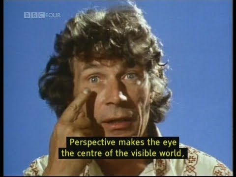
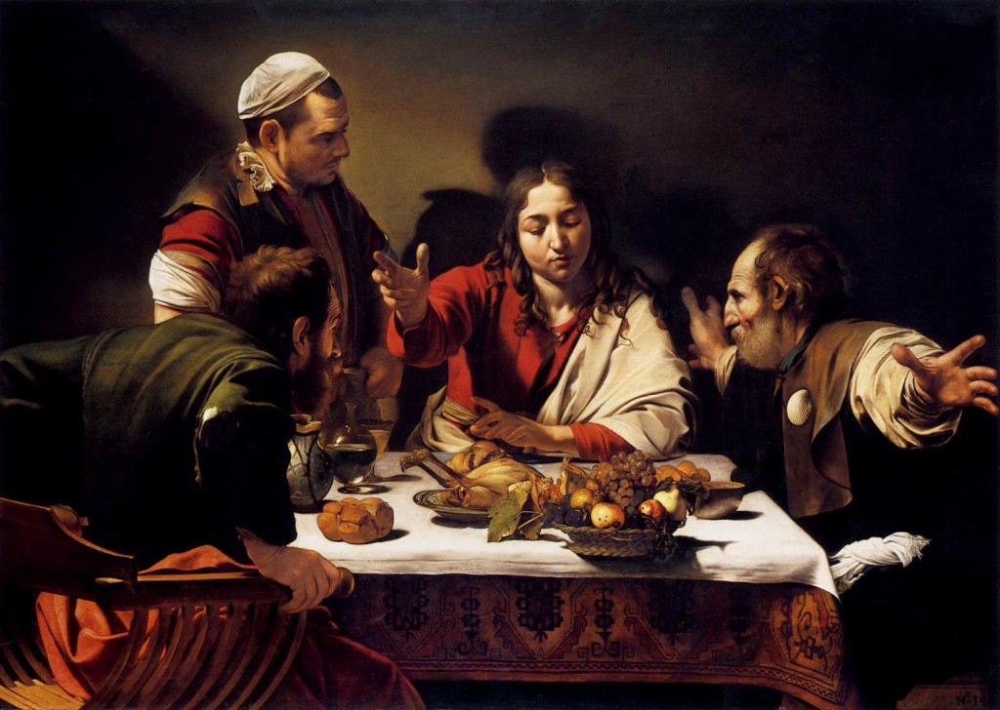
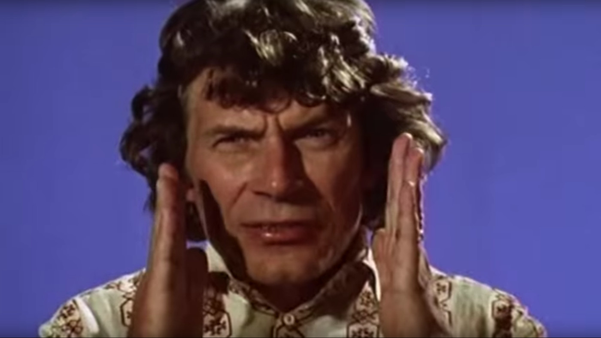

Week 2 Assignment
Ways of Seeing - John Berger

In episode 1 of “Ways of Seeing” I found John Berger’s arguments on how modern photography tools are able to manipulate the original meanings of paintings very interesting. Since a painting is silent and still, it allows for its meaning to be perceived differently by different people and thus, subject to argument. The invention of the camera has allowed paintings to be reproduced and viewed from infinite locations as well as the meaning of the painting to be transmitted. Not only can a painting’s meaning be transmitted, its original meaning can also be altered with the invention of modern photography tools. This can be done with film and camera movement, as well as playing music over it to create a narrative by carefully selecting details to highlight.

Berger goes on to explain the correlations between oil paintings from the 15th century and modern photography. With the use of oil, artists were able to depict extreme detail allowing one to view the texture of items and people within the painting. Centuries ago in modern Europe works of art were commissioned by the wealthy to display their private possessions and ultimately their wealth. Similarly to the way oil paintings were able to make those who were not able to attain a certain lifestyle of status and class feel envy, color photography and publicity appeal to a way of life that most aspire to, but can not or have not yet achieved. When oil paintings were popular, they were surrounded by gold frames to symbolize the owner’s wealth. Today publicity images are solely surrounded by us, just as we are.
